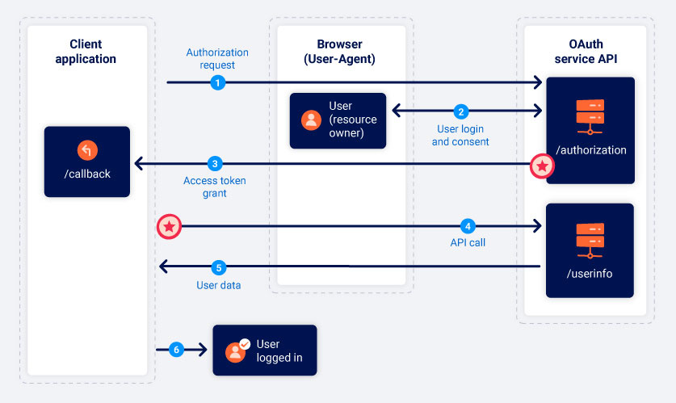

Implicit Type
Implicit Grant Type• skips authorization code (less secure)
• all communication happens via browser redirects
• no secure back channel.
• Access token and user data more exposed to attacks
• more suited to single page applications & native desktop applications
◇ can't easily store client_secret on the backend and don't benefit from auth code grant type
1. Authorization Request• /authorization endpoint (doesn't have to be called “authorization” could be “auth”)
• Parameters:
◇ client_id: unique identifer of client app (generated at registration)
◇ redirect_uri: where a user should be redirect to when sending auth code to client app. (Attacks based off exploiting this flaw)
◇ response_type: what respponse client is expecting (what flow it wants to initiate).
token ◇ scope: which subset of user's data to access. (maybe custom scopes or ones standard to OAuth)
◇ state: unique, unguessable value tied to current session of client app. OAuth should return exact value back in response along with auth code. (sort of like a CSRF token)
2. User Login and Consent• User Redirected to login page
• Once user has approved once, this step will be completed automatically.
3. Access Token Grant• Redirect user to redirect_uri.
• send access token and other token specific data as a URL fragment
• never sent directly to client application -> must use script to extract fragment and store it
4. API Call• make API calls to OAuth's services /userinfo endpoint
• this happens via the browser
• Authorization header
5. Resource Grant• access to user data, authenticated.
{kind=link}